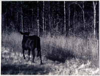

Philip Martin
Bad Brain
(Jason Beckwith)
 I
wake up and I can't get back to sleep. I leave
my bed, my wife, and
I walk blind, closed-eyed, a little ways, down the hall to this room. I tap
the space bar, the computer blinks grudgingly, radiates my face. I have a
problem. Excusez-moi de vous deranger, monsieur, mais j'ai un probleme.
There. That's half of it, isn't it? That counts. I'm not sure but it is possible
that I feel better already. Why go any further; is it really anyone else's
business? Why provide details? Why gossip about myself? This is not a suicide note,
it's not even a real confession. Possibly it is nothing at all, just a blemish
on my cerebral cortex, a little hard gray snaggy pimple on the inside of my
skull. A little pressure point, an irritant, maybe even a kink. There's
nothing so horrible about that, everybody has kinks, even us bland boys, us late
baby booming lower upper middle class consumers.
I feel you out there and I want your attention. I have a problem, I
have an announcement: Don't go. Not yet at least. I'm building up to
something, to not much maybe.
I want your attention. I want it bad enough to ask for it, which
isn't something someone like me should ever do. I'm not begging you, but
... Don't be afraid - at least don't be afraid of me.. My problem is not
a dangerous, serious problem. It's not even like the problems the
listeners tell
the lady radio shrink about - though I remember she's not really that
kind of doctor, she's a physiologist or a kinesiologist by training - I'm
actually quite happy with my situation. I'm a happy guy. Just like the
Promisekeeper bumper stickers say, I love my wife. I pay my bills. I have a lot of
things figured out - I have no great gnawing ambitions left. I just want to
live in the world, have my little house and my dogs and my work, have enough
money to play golf and travel and maybe even do a little good. Like the movie
stars, I want to be able to give a little back.
But you're not interested in that. You want to know the worst about
me. I'm coming to it. I just want to prepare you for the inevitable
anticlimax. Like most lower upper middle class Southern whiteboys, my life has been
anticlimax. I peaked when I was a Theta Xi, a shooting guard who could vertically
leap his waist size. So here goes.
Ready?
OK, no more stalling.
Sometimes I think I may have killed someone. Make that
"murdered." Make that sometimes I feel as though I may have murdered someone. A woman.
Shocked? Well, don't be. I was very careful to describe my problem accurately. Sometimes I feel as though I may have murdered someone.
The problem is not that I may have murdered someone - in fact, I can tell
you with some confidence that I have never murdered anyone - but that
sometimes I have this vague, irrational, inextinguishable sense that I may have
committed this crime. And while I am certain that I didn't, the feeling that comes
over me, the chill sensation, a certain criminal flatness, is nevertheless
very real
and worrisome. I very nearly panic. I am imbued with guilt and shame.
I very nearly despair. I want to confess but I open my mouth and find there
is nothing to say. Just "sorry." Sorry.
I have this recurring dream. I am young and in Baton Rouge, in
college, walking in a neighborhood of small frame cottages just north of
campus. It is an October, I can tell by the air's bluish bite and seasonal streaks
of orange and black plastic draped like Spanish moss over some of the rent
houses' porch railings. An effulgence, like Vermeer's gold gas, from a particular
house's picture window draws me and suddenly I am down an alley and peeping
through paned glass at a thick young woman in a slip with cotton between her
toes brushing at yards of brown hair, a beaver pelt of hair. She looks up
at me and she sees me and, true to the logic of dreams, she doesn't scream but
smiles. Now I am in the house and she is beneath me on the yellow-tiled
bathroom floor. We are making love or fucking but it is no rape and no we are
on our sides and I am looking slightly up at her. We roll and now with my
hands around her throat, absently caressing, she is murmuring, making
noises of impending satisfaction and for some reason it is impossible for me to
see her
face. I am straddling her, kneeling on the floor, my knees crooked religiously, my patellas paying penance. It is if I am deciding what
to do. I don't decide. My hands grip. She starts up and I push her back
down. So softly, so quietly. I cannot believe how gentle she goes. It is easy
work, a bit of shushing. Some quiet assurances. Sleep. There is a German
word: Lustmord.
Now I can see her. Now I know her.
She is a girl I knew in high school. A girl I went out with a few
times - maybe five times. Someone with whom I was friendly. A smart girl, a
cheerleader. the best high school French student in the state. No one
I ever wished to harm, not even a genuine girlfriend or object of adolescent
lust.
Just someone I might otherwise have forgotten if not for this chronic
dream. Her emergent face is my cue to surface, to swim desperately for the
light, to break and breathe. I wake up with a bad head - a wobbly gob of
mercury loose inside a tin shell - and a lightly tripping heart. I hear the
authorities at the door, the slide of the newspaper across the front porch, the
rustle and cry of dreaming dogs in their shelters below our bedroom window.
Going back to sleep is no good so I lie in the grainy dark, grit-socketed and
pounding, smelling bad to myself and waiting for the bullet in the back of the
brain.
That's all.
I don't believe it, but somehow my body does - sometimes for an hour
after waking, sometimes longer. They say the body doesn't know the
difference between a dream and an actual occurrence, that the subconscious mind
processes them the same. They say a lot of things, mostly psychobabble and
gobbledly gook but the important thing is that for a little while it is real
and I am guilty. For a little while I am a murderer.
You think this is no big deal. Well, I think it is no big deal. But I
cannot put it away. I have had my dream again and so I walked across the
hall from the bedroom to this computer and sat down determined to write it out,
to work it through. Just a few minutes ago I was sleeping beside my wife, now
I hear her turning, listening to this cushioned clacking. She no doubt
thinks I am working on my column, that I have been seized by inspiration and that
I must get down whatever is ricocheting through my head. I imagine she finds
the sound reassuring. I don't imagine she can hear the panic. I must stop
this, it isn't healthy. It isn't good.
I am back.
I have decided to continue. I don't know why, I just trust that
something will work itself out, like the piece of glass from the bookcase I
shattered when I was twelve years old - yes, running in the house - that
mysteriously popped out of my left knee when I was twenty-five. They say the body
can retain sterilized glass. They said that on an episode of M*A*S*H,
when Hawkeye and Trapper John sewed some marbles into the abdominal cavity of some
bully officer as a joke. This was after they saved his life and the only
side effect was the sound of the marbles knocking against one another inside the
officer's gut. I guess they figured that was OK to do, after all he was a
bully. Maybe that's what my dream is, just someone's idea of a joke. I don't
think it's particularly funny, but then I guess I'm not supposed to - after
all I'm the bully officer.
To be honest, as a white guy with a little money and an excellent
credit rating, I'm not used to being the butt of jokes. So maybe I should be
a good sport about this. It's just a nightmare after all. And everybody has
nightmares.
But I've been thinking I've been going about this all wrong. I think
maybe I should start again. Maybe you shouldn't have heard about my dream.
Maybe that's not important. I'm just going to pretend that I don't have
them, that like most people I never remember my dreams. And I'm just going to
tell you a story in exchange for you forgetting all about it. And maybe we can
all learn
something. maybe we can come to an understanding. I'd like that. I'll
write this story now, we can forget about the dream and maybe get back to
sleep.
A couple of years ago we were watching the Orioles and the Red Sox.
play on TV when Coal lurched to his feet.
Coal is a big animal, almost freakishly large for a Labrador
Retriever. Big and rangy, he weighs more than a hundred pounds. He is a confident
alpha male, so gentle and self-assured he allows squirrels to steal his food. He
knows there will be more when he wants to eat.
So Coal lurched to his feet, away from his spot between my wife and
myself, banging the heavy slate-topped coffee table aside. He seemed to
jackknife in the air, then came down heavy - with a crack - on the hardwood floor.
He began to twitch and stiffen, to foam at the mouth and leak
acrid-smelling urine. His jaws locked up. He smelled sick and fearful. I thought he
was choking - we both thought he was choking - and I straddled him, tried
to force open his jaw with my fingers. L. reached into his mouth to search for
a foreign object - we suspected a golf ball - and was badly bitten. His
eyes clouded, his body convulsed, big muscle shock waves that seemed to go
on for hours.
Our other dog Quark - who is half Lab and half terrier - begin to
growl and cry. L. was bleeding, her blood was dark with oxygen and heavy drops
were audibly splattering on the floor. I was - for an instant, a second -
paralyzed with weird shame. I knew I had to try to do something. I dove onto
the floor, hustling after a loose ball, burning my elbows. I grabbed Coal around
his thick chest.
I pulled myself to my knees, I tried to approximate a Heimlich
maneuver, I squeezed and pounded. Coal arched his back and stiffened. He went
rigid, his eyes frozen wild. He made a glottal noise. I scrambled up, ran into my office to get a Swiss Army knife - I
actually planned to cut a hole in his throat. A tracheotomy. Hawkeye was going
to cut his throat, I so loved that dog.
But L. stopped me. Coal was breathing. He was sopping, wet with his
own piss and drool, and likely hurt by my thumping on his chest, but
breathing. Long, regular, exhausted breaths.
L. had put Quark outside and now she stood there bleeding on our chic
bleached hardwood floors and looking at me with my sharp and shiny knife
and the poor befuddled animal she had named after the black Lab in The
Witches of Eastwick. Coalie licked my hand in apology.
We called the all-night emergency vet and they didn't even ask us to
bring Coal in. They diagnosed him over the phone. Epilepsy. Not a very big
deal really, happens all the time.
That was the first Bad Brain episode.
We cleaned up the mess and I drank a tumbler full of Glenlivet in two
gulps. Then I drove L. - over her protests - to the emergency room. It took
fifteen stitches to close the gash and we got home after 3 a.m. and lay in
the grainy dark and talked about Coal.
There is a medication we could give him, two doses of Phenobarbital
per day. L. is afraid it will take the edge off him, that it will make him
drowsy and hungry - that he will get fat and sluggish. I worry that, big animal
that he is, he might hurt himself while thrashing about. So far we have
decided to do nothing; we mark these episodes on the calendar, we are learning to
trust our instincts and we try to make sure that he's outside - in the yard or
on the deck - when these fevers take him.
It is hard for L.; before we married, Coal often shared her bed. For
a while, he saw me as a usurper, even now he still holds a mild confounded
grudge in his stubborn doggie way. He is not my dog, he is not our dog, he is
her dog and no matter how kind Coal and I are to each other, how
understanding and solicitous of each other we may seem to be, there is the spice of
rivalry in
our relationship. I love that dog, but he reserves a bit of his big
queer heart. There is a part of Coal that I can't know. And I respect him
for it. I don't want him dulled; that seems unfair. It would spoil our
competition. I asked the vet flat-out what he would do and he told me the pills -
should we
choose to use them - would be more for my sake than for Coal's.
If you'll sleep better knowing he won't have a seizure, then you
might want to consider them, he told us. But Coal doesn't know what hit him. He
doesn't get any trauma from these events, he just wakes up a little confused,
maybe a little sore if he's been bumped about a bit. But he's more upset
because everybody around him is upset than anything else - he's just
disoriented. "Bumfuzzled," L. calls it.
So we watch him, and after every fit have the same conversation. We
can stand it. Better our Coal with Bad Brain than some zombie pooch we don't
know. Now sometimes when I have my sad dreams and walk outside to check on
the poor damaged thing. He lifts his sweet heavy head; he pities me, tells me
everything will be all right.
He kicks and whinnies like a colt while he dreams his black-and-white
dreams of rabbits, or of fetching balls, or whatever puppies dream of - I go
back to bed and listen through the screen for him; I can tell when he is in
his dog house, when he's on the bricks, when he's on the deck. He bumps into
things - the vet told us cataracts are growing in his eyes, Labs are
susceptible - he blunders through the dark, half-blind and crazy, his doggy head
confused yet untroubled, ready for sleep.
|
{kind=link}